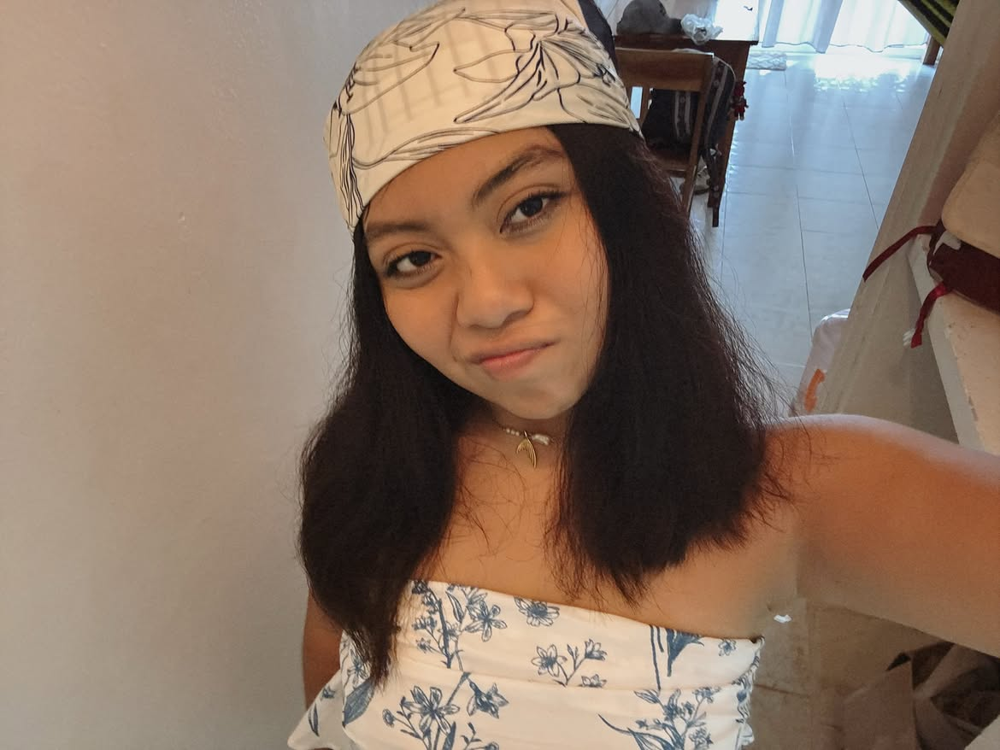

LAS PERSONAS DE MI VIDA
Galería de amigos
| Redes sociales de mis amigos | ||
|---|---|---|
| Hombres |
Nombre: Angel Velázquez Instagram: its_angelo.20 |
Nombre: Mauricio Kuyoc Instagram: itseduardokuyoc |
|
Nombre: José Meza Instagram: jose_thg3 |
Nombre: Rodrigo Pérez Instagram: rodrigo_loeza2095 |
|
| Mujeres |
 Nombre: Isabel Cetzal Instagram: izzycetzal17 |
Nombre: Victoria Fernández Instagram: vic_ferlop |
|
Nombre: Lidia Caamal Instagram: lecf25 |
Nombre: Jenifer Mandujano Instagram: sky.keeper_jm |
|
Después de conocer a algunas de las personas importantes para mí, puedes volver a la página principal.